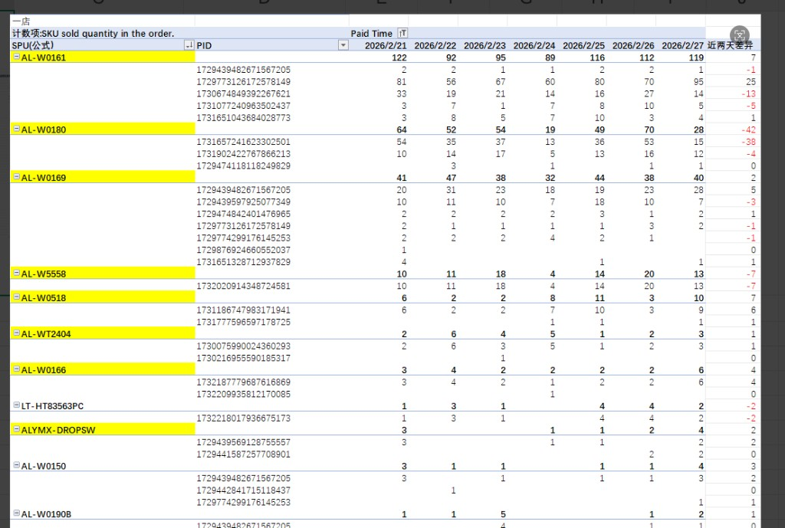
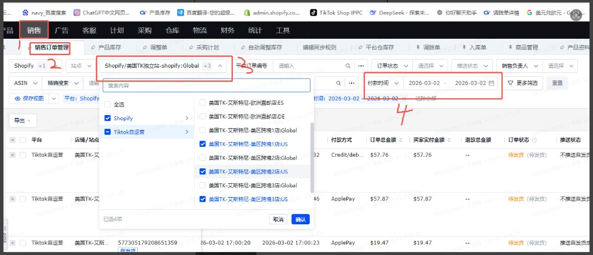
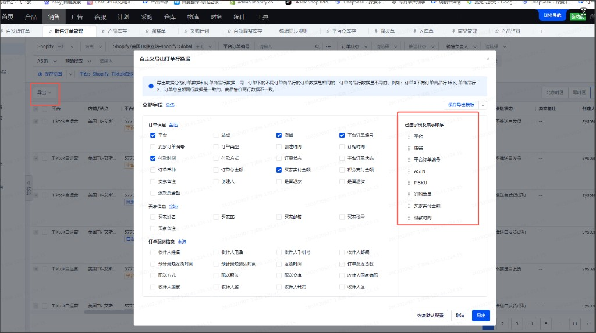
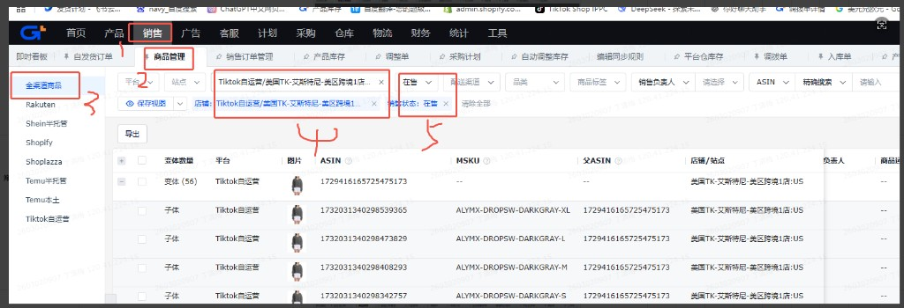
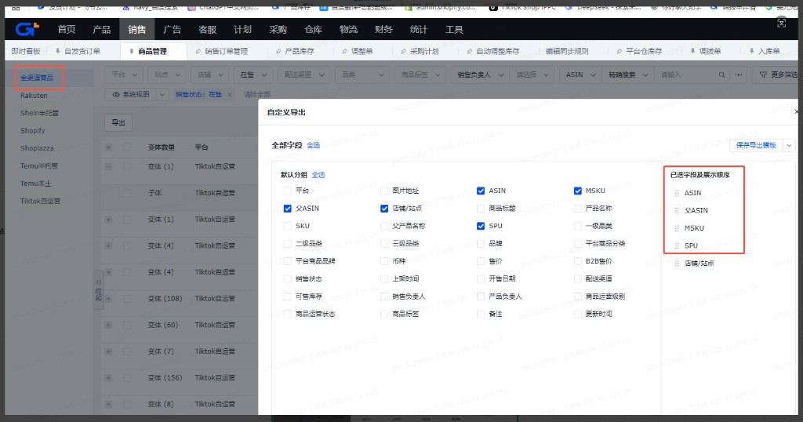

| 优先级 | — |
|---|---|
| 影响面 | — |
| 价值 | 原先每天0.5小时人工处理，频次一个月30天，每个月可节省 15小时；系统化，可介入AI进行数据分析 |
需求一达成的目标：按日、按店铺的订单数播报，在企微项目群中呈现如下形式。
| 日期 | 店铺 | 订单数 |
|---|---|---|
| 2月27日（美国时间） | 1店（美区跨境1店） | 230 |
| 2月27日（美国时间） | 2店（美区跨境2店） | 0 |
| 2月27日（美国时间） | 3店（美区跨境3店） | 3 |
| 2月27日（美国时间） | 英区（英国直邮店） | 12 |
| 2月27日（美国时间） | 独立站 | 0 |
| 2月27日（美国时间） | 合计 | 245 |
企微发送文案示例：2月27日（美国时间）订单数：1店230 / 2店0 / 3店3 / 英区12 / 独立站0 @所有人
本需求不涉及独立映射表，直接基于「全渠道销售订单表」的店铺、平台订单编号做去重统计。源数据取数方式见本文「三、源数据统一梳理」。
| 优先级 | — |
|---|---|
| 影响面 | — |
| 价值 | 原先每天0.5小时人工处理，频次一个月30天，每个月可节省 15小时；系统化，可介入AI进行数据分析 |
涉及店铺（先做标注）：
美国TK独立站-shopify:Global / 美国TK-艾斯特尼-美区跨境1店（先做）/ 美区跨境2店 / 美区跨境3店（先做）/ 美国TK-艾斯特尼-英国直邮店:GB（先做）
TK-独立站数据销量趋势数据| 条件/公式 | 关联字段 | 源数据表 | 源字段名称 | 最终数据表 | 目标字段 |
|---|---|---|---|---|---|
| — | — | 全渠道销售订单表 | 付款时间 | TK-独立站数据销量趋势数据 | Paid Time |
| 提取付款时间的年月，格式 202502 | — | 全渠道销售订单表 | （公式） | TK-独立站数据销量趋势数据 | 归属月份(公式) |
| — | — | 全渠道销售订单表 | 店铺 | TK-独立站数据销量趋势数据 | 店铺 |
| — | — | 全渠道销售订单表 | 平台订单编号 | TK-独立站数据销量趋势数据 | order id |
| — | — | 全渠道销售订单表 | asin | TK-独立站数据销量趋势数据 | Platform SKU ID. |
| — | — | 全渠道销售订单表 | msku | TK-独立站数据销量趋势数据 | Seller sku input by the seller in the product system. |
| — | — | 全渠道销售订单表 | 订购数量 | TK-独立站数据销量趋势数据 | SKU sold quantity in the order. |
| — | — | 全渠道销售订单表 | 买家实付金额 | TK-独立站数据销量趋势数据 | Order total amount paid by the buyer. |
| — | asin | 全渠道商品表 | 父ASIN | TK-独立站数据销量趋势数据 | PID |
| — | asin | 全渠道商品表 | SPU | TK-独立站数据销量趋势数据 | SPU(公式) |
需求二达成的目标包含三类产出：
| 序号 | 目标结果 | 说明 |
|---|---|---|
| ① | 最终数据表展示（含店铺搜索） | 基于「TK-独立站数据销量趋势数据」等清洗后的数据，在界面上提供最终数据表展示，并支持按店铺搜索/筛选，便于按单店查看订单明细与销量趋势。 |
| ② | 销量趋势界面（参考下图效果） | 界面需达到与下图类似的展示效果：按店铺（如「一店」）为维度，以 SPU → PID 层级展示；按 Paid Time 日期的每日销量；含 近两天差异 列（负值可用红色等突出显示）；SPU 行可高亮/加粗以区分汇总与明细。支持按日期、PID 等筛选。 |
| ③ | 异常播报 | 基于上述差异数据，由 AI 识别销量增减异常的 PID，并将异常情况播报到企微项目群。 |
结果① 列表 demo（最终数据表字段与示例行）
数据表：TK-独立站数据销量趋势数据。列与 2.3 映射表中的目标字段一致，界面需支持按「店铺」搜索/筛选。
| Paid Time | 归属月份(公式) | 店铺 | order id | Platform SKU ID. | Seller sku... | SKU sold quantity... | Order total amount... | PID | SPU(公式) |
|---|---|---|---|---|---|---|---|---|---|
| 2026-02-27 10:15 | 202602 | 美区跨境1店:US | ORD-20260227-001 | 1729439482671567205 | AL-W0161-DARKGRAY-XL | 2 | 57.76 | 1729439482671567205 | AL-W0161 |
| 2026-02-27 11:22 | 202602 | 美区跨境1店:US | ORD-20260227-002 | 1731657241623302501 | AL-W0180-BLACK-L | 1 | 29.99 | 1731657241623302501 | AL-W0180 |
| 2026-02-27 14:08 | 202602 | 美区跨境3店:US | ORD-20260227-003 | 1729416165725475173 | ALYMX-DROPSW-DARKGRAY-M | 1 | 19.47 | 1729416165725475173 | ALYMX-DROPSW |
| 2026-02-26 09:30 | 202602 | 英国直邮店:GB | ORD-20260226-004 | 1729439482671567205 | AL-W0161-DARKGRAY-S | 3 | 89.97 | 1729439482671567205 | AL-W0161 |
② 界面效果参考示意：

以下为两个源表的取数方式，需求一、需求二共用；来源均为 积加后台。
| 项目 | 说明 |
|---|---|
| 来源途径 | 积加后台 |
| 步骤 1 | 积加 → 销售 → 销售订单管理 → 筛选店铺 → 筛选付款时间 |
| 步骤 2 | 导出 → 根据所选字段导出 → 导出全渠道销售订单表 |
| 店铺范围 | 美国TK独立站-shopify:Global 美国TK-艾斯特尼-美区跨境1店 美国TK-艾斯特尼-美区跨境2店 美国TK-艾斯特尼-美区跨境3店 美国TK-艾斯特尼-英国直邮店:GB |


| 项目 | 说明 |
|---|---|
| 来源途径 | 积加后台 |
| 步骤 1 | 积加 → 销售 → 商品管理 → 全渠道商品 → 筛选店铺 → 筛选在售 |
| 步骤 2 | 导出 → 根据所选字段导出 → 导出全渠道商品表 |
| 店铺范围 | 同上 5 个店铺 |


| 需求 | 核心动作 | 使用的源数据 | 时间与金额规则 |
|---|---|---|---|
| 需求一 | 店铺+订单去重 → 订单数播报 | 全渠道销售订单表 | 实付≠0；美区 18:00/17:00 前，欧洲不卡时间 |
| 需求二 | 订单明细映射 → 近两天/7天 PID 销量差异 → AI 异常播报 | 全渠道销售订单表 + 全渠道商品表(asin) | 同上 |